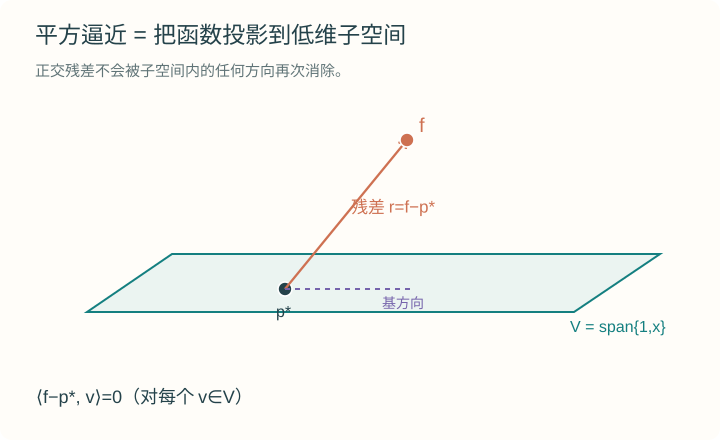
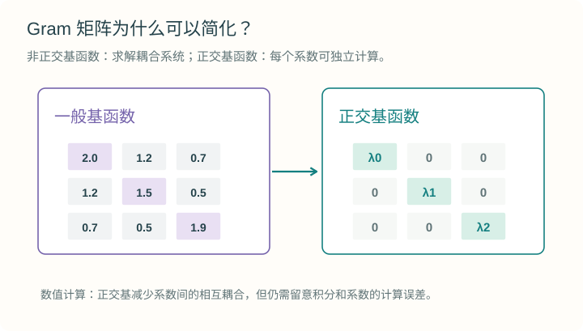
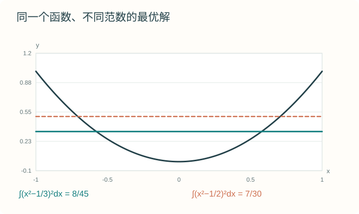

CHAPTER 08 · NUMERICAL ANALYSIS
最佳平方逼近：从正交投影到 Gram 方程
为什么最佳平方逼近不是最小最大误差？从带权内积、残差正交和 Gram 矩阵出发，手算并验证 x² 的一次最优投影。
01 · 最大误差更小，却可能不是最佳平方逼近
若只能用一个常数代表 f(x)=x²（x∈[-1,1]），一致逼近的答案是 1/2，但平方误差积分最小的答案是 1/3。它们都是常数空间的最优解，只是优化目标不同。
平方逼近之所以重要，是因为在有内积的函数空间中，最优解可以理解为正交投影：从函数指向有限维模型空间的误差，与模型空间中每一个方向都正交。相比逐点比较，这个几何条件可以直接转成一组线性方程。

02 · 从带权平方误差得到 Gram 正规方程
设 w(x)>0 几乎处处成立，且所有相关积分有限。选择线性独立的基函数 φ₀,…,φₙ，在它们张成的子空间里寻找 p(x)=Σcⱼφⱼ(x)，使加权平方误差最小：
对各系数求偏导并令其为零，残差与每个基函数都正交。得到 Gc=b，其中 Gram 矩阵和右端项分别由内积构成：
只要基函数在带权 L² 意义下线性独立，Gram 矩阵正定，理论上的最优系数唯一。数值上用幂基构造高次 Gram 矩阵可能非常病态，正定性本身并不保证用浮点数直接求解一定准确。

03 · 残差正交与毕达哥拉斯恒等式
记最佳投影为 p*，残差为 r=f−p*。对于任意候选 p∈V，有 p−p*∈V；而 r 与整个子空间正交，因此范数平方满足：
这说明为什么一旦找到满足正交条件的解，就再也无法通过改变子空间系数降低平方误差。该结论基于内积诱导的平方范数，不能直接照搬到最大误差范数中。
04 · 手算 x² 的一次最佳平方逼近
取 f(x)=x²、区间 [-1,1]，基函数 φ₀(x)=1、φ₁(x)=x，权函数 w=1。由于区间关于 0 对称，⟨1,x⟩=0，因此 Gram 矩阵是对角矩阵 diag(2,2/3)；右端向量是 (2/3,0)。解得 c₀=1/3、c₁=0。
若用一致逼近的常数 1/2，平方积分误差为 7/30，大于最优解的 8/45。两者之差 1/18 正好等于 ∫(1/2−1/3)²dx，可直接核验毕达哥拉斯恒等式。

05 · 解析正交投影与离散采样不要混为一谈
from fractions import Fraction
# f=x²，空间 span{1,x}，积分区间 [-1,1]
gram = [[Fraction(2),Fraction(0)],
[Fraction(0),Fraction(2,3)]]
rhs = [Fraction(2,3),Fraction(0)]
coeff = [rhs[0]/gram[0][0],rhs[1]/gram[1][1]]
assert coeff == [Fraction(1,3),Fraction(0)]
def square_error(c):
# 精确积分 ∫_{-1}^1 (x²-c)² dx
return Fraction(2,5)-Fraction(4,3)*c+2*c*c
assert square_error(Fraction(1,3)) == Fraction(8,45)
assert square_error(Fraction(1,2)) == Fraction(7,30)
print(coeff, square_error(coeff[0]))以上是连续积分下的投影，而给定离散观测数据时，应把积分替换为加权求和，形成离散最小二乘；只有在数值求积足够准确的前提下，两者才能被用于相互近似。高阶逼近时还应考虑 Legendre、Chebyshev 等正交基和稳定的系数求值方法。
原始资料与延伸阅读
本节参考以下权威资料，并将文献中的数学结论与本文独立构造的示例严格区分。
- NIST DLMF §3.11 · Approximation Techniques：正交多项式展开、最佳逼近方法和数值求值。
- NIST DLMF §18.3 · Classical Orthogonal Polynomials：Legendre 等多项式族、权函数及正交性。